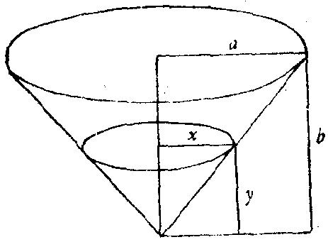

20．一个速率问题
水以速率r流进锥形容器。容器具有正圆锥形状，底是水平的，顶点在下
方，底的半径是a，高为b。当水深为y时，求水表面上升的速率。最后，假定 a=4
尺， b=3 尺，r=2立方尺/分， y=1 尺，求未知数的数值。
图6
我们假定学生知道最简单的微分法和变化率的概念。
“已知数是什么?”
“圆锥底的半径 a=4 尺，圆锥的高 b=3 尺，水流入容器的速率r=2立方尺/分，
在某一时刻的水深 y=1 尺。”
“对，从问题的叙述方式看来，是建议你先忽略具体数值而用字母求解，
把未知数用a，b，r，y表示出来，而仅在最终得到未知数的字母表达式以后再
代入具体数值。我愿意按照这条建议做。现在未知数是什么？”
“当水深为y时，水面升起的速率。”
“它是什么?你能用其他术语来说吗?”
“水深增加的速率。”
“它是什么?你能否再重新叙述得更不同些?”
“水深的变化率。”
“对，y的变化率。但什么是变化率?回到定义去。”
“函数的变化率是导数。”
“正确。现在y是函数吗?如前所述，我们不管y的具体数值。你能否想象y
是变化的?”
“是的，水深y随着时间而增加。”
“这样，y是什么的函数?”
“时间t的。”
“好，引入适当的记号。用数学符号，你将怎样写‘y的变化率’?”
“dy/dt”
“好，这就是你的未知数。你必须用a，b，r，y来表示它。顺便说一下，
数据中有一个是‘速率’，哪一个?”
“r是水流进容器的速率。”
“它是什么?你能用别的术语来说它吗?”
“r是容器中水的体积的变化率。”
“它是什么?你能否再重新叙述得更不同些?你将怎样用适当的记号来写
它?”